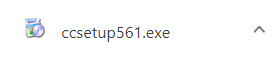
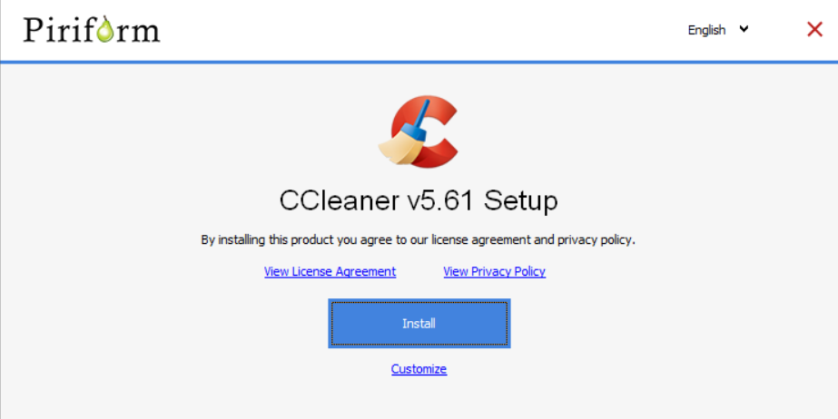
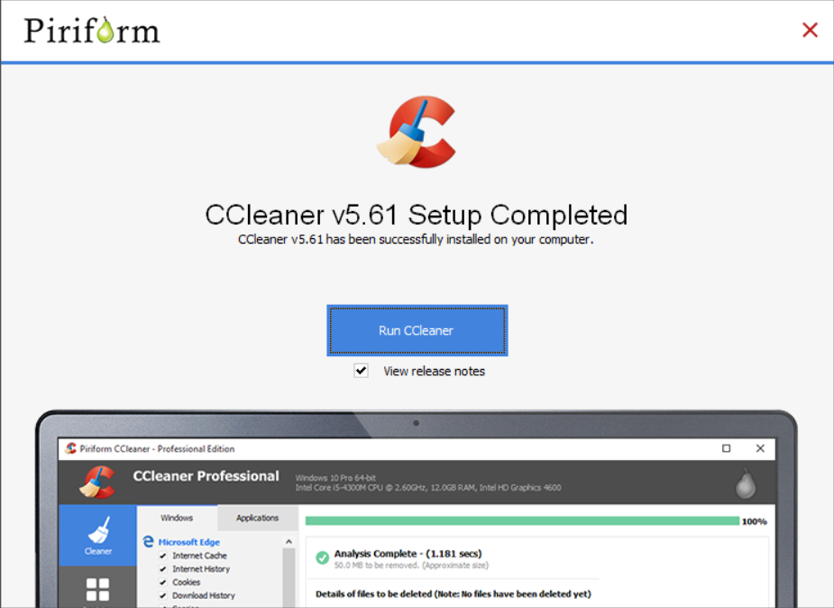
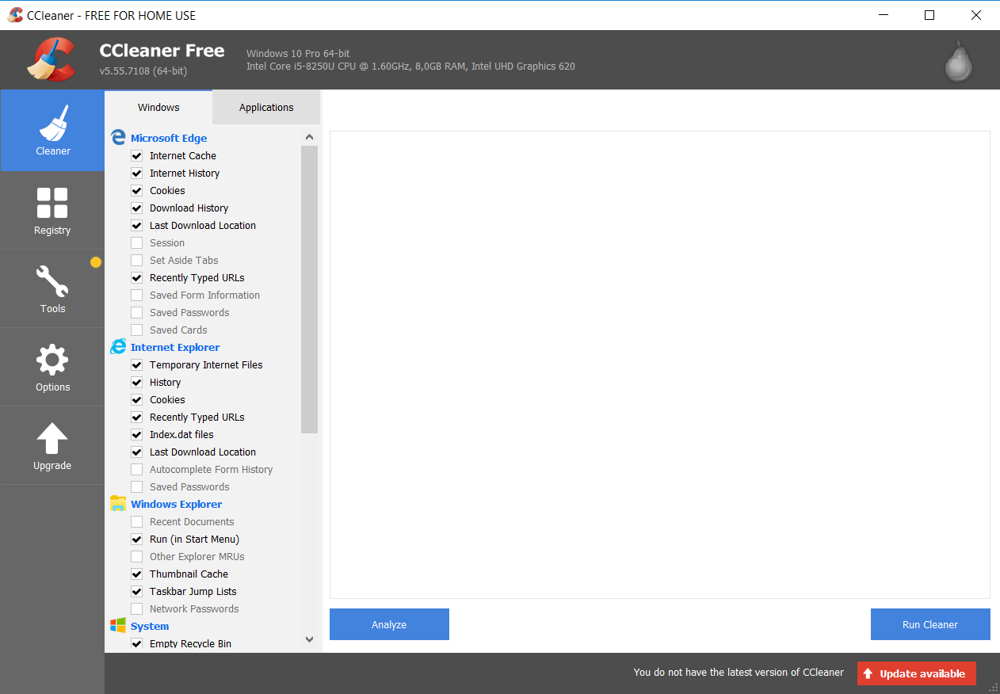
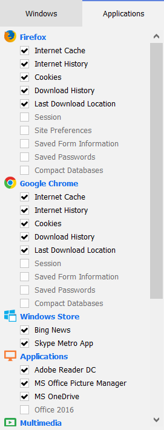
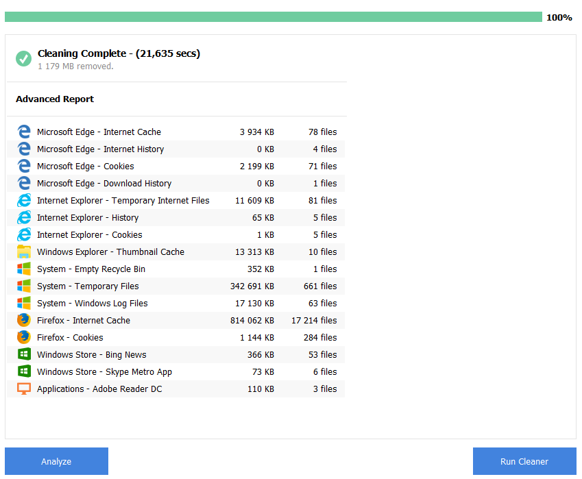

Introduction to CCleaner
Download and Install
General Usage
Advantages vs. Disadvantages
Good Alternatives
This Utility program was designed by Piriform company and released in the year 2003. , the number of downloads exceeded 2.5 billion.
CCleaner is a lite utility for computers which use Microsoft Windows operation system and mainly used to clean the space of computer drive from unnecessary temporary or rarely used files and programs.
CCleaner offers its users' privacy protection and browsing history and temporary files cleaning. This provides Internet users with a safer and more confident experience, while being less vulnerable to identity theft.
CCleaner's features clean unneeded files from several of your programs, saving hard disk space. It also removes unnecessary entries in your Registry, supports software uninstallation and manages which programs start when Windows boots.
To download this program please use the official website of the developer. There you can also find any information related to this application.
CCleaner provides us with two versions of the program. The First one is a "Free" version with a limited number of functions. The Second option is a "Professional" which has a wider range of features, but in this case, you will have to pay for using it.
Choose the one that suits you best and push the "download" button. Below we provided you with the link for downloading a "Free version" of CCleaner:
Then your browser will download the installation file with .exe file extension. If the program was downloaded successfully you will see this file at the bottom of your browser:
After you run the installer you will see the first step of the installation process. Press "Install" button to continue.
Then, the installer will proceed the installation process by itself, so you don't have to do anything else.
After installation is completed press "Run CCleaner" button, if you want to run this program, or press "Cross" button to close the installer.
To start using CCleaner you should double click the icon on your desktop. The starting window is shown below:
In the "Application" section you see your programs installed on your computer. You can put a tic in every box next to the files you want to delete from your PC (cashe, history, cookies, etc.)
After you choose everything you want to clean - push the "Run Cleaner" button at the bottom right corner to start the process.
In the end of "cleaning", CCleaner will show you a brief report:
